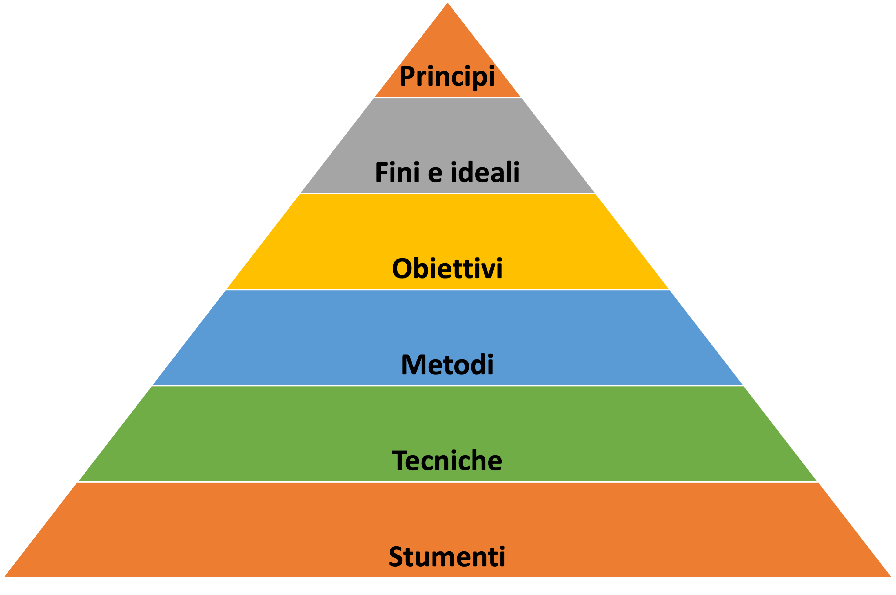

Cos’è uno slogan?
“liberta’, uguaglianza, fraternita” (rivoluzione francese)
pericoli
slogan ha funzione positiva semplificativa nella diffusione di concetti difficili ma anche il pericolo di trasmettere forme di pensiero pre-elaborato, e attribuire etichette a carattere ideologico
Language plays a central role in this form of warfare, as it is used to spread propaganda, create division, and exploit vulnerabilities in people’s cognitive biases.
Slogan / tormentoni incontrati nel mio lavoro
“Sustainable development”
- Lezione appresa: il ritorno alla fonte, origine di una parola o di una espressione, consente di disporre di un valido aiuto per scoprire i principi e i riferimenti che sono alla base di quanto si trova intorno a nio, in modo da individuare le loro radici, le origini, o anche la semplice provenienza, comprenderli a fondo e confrontarli con a realtà. (Fioravanti 2006, 207)
(anche “artificial intelligence” era un esempio interessante)
“Cambiamento climatico” “global warming”
mitigazione = Ridurre le cause del cambiamento climatico, ovvero le emissioni di gas serra nell’atmosfera che sono ritenute responsabili del riscaldamento globale1. (transizione verso fonti rinnovabili, efficienza energetica, riforestazione, cattura CO2)
adattamento = Gestire gli effetti del cambiamento climatico, in particolare i danni causati da eventi metereologici estremi (infrastrutture resistenti, agricoltura adattiva, gestione delle risorse idriche, pianificazione urbana migliore in zone a rischio)
Dal momento che il consenso sulle cause antropogeniche del cambiamento climatico e sulla nostra capacità di mitigarlo è tutt’altro che unanime. Io ho studiato abbastanza statistica per capire che stabilire un nesso causale LINEARE (gas serra- temperatura) è molto più complesso di quanto si possa pensare, soprattutto quando voglio spiegare un fenomeno che dipende da piu variabili, tra cui alcune latenti2 e non osservabili (cicli solari, variazioni orbitali, eruzoni vulcaniche, nuvole,) dati incompleti non rappresentativi per fenomeni ciclici che si verificano su scala temporale molto lunga. Di fatto i modelli di simulazione della “greenhouse theory” non hanno replicato i cambi climatici del passato.
Lezione appresa:
- spacchettare un termine complesso per discernere parti che condivido o meno
- ma il compito degli istituzioni di indirizzo politico (e degli investimenti pubblici) e’ buttarsi a capofitto su una impresa fuori dalla nostra portata e con strumenti (forse) inadeguati o dedicarsi a problemi piu concreti per cui abbiamo mezzi per misurare e intervenire efficacemente?
“ESG”
- gusti
- opinioni = sospensione del giudizio per mancanza di elementi certi (ergo ognuno ha le sue e non sono da rispettare perché non hanno consistenza tale da accrescere la conoscenza – si rispettano le persone)
- valori = cio che si ritiene vero, buono e bello secondo un giudizio personale più o meno in accordo con quello della società in cui si vive. SONO LEGATI AL SOGGETTIVISMO PIU’ IRRIDUCIBILE, quello che finisce con eludere l’esisenza stessa di principi. (Fioravanti 2006, 197)
- Lezione appresa: L’attuazione di un valore esclude quella di un altro (giustizia e misericordia, bene particolare e bene comune) e si deve fare una scelta: qual è il criterio per la scelta?
I valori (che hanno un vincolo affettivo) non sono elementi passibili d’educazione come le qualita umane, perché rimangono sempre esterni alla natura umana
che guida la mia azione?
Il ruolo della scorciatoia mentale (e linguistica)
Non c’e’ da stupirsi che la comunicazione politica e commerciale si basi su slogan e frasi fatte. Del resto, noi umani siamo fatti per risparmiare energia mentale e perciò cerchiamo di fare il meno sforzo possibile.
Inserire le parole in un contesto
Dalle parole alle azioni
[…] si deve fare i conti con la “mistica del metodo” […] : messi al bando i grandi perché della vita umana, tutti gli sforzi si concentrano sulle metodologie di ogni tipo e genere, e sulla idolatria della sperimentazione, quasi da essa possa arrivare la soluzione di ogni problema. Si moltiplicano quindi gli strumenti […], i quali però, quando utilizzati senza riferimento ai principi, rischiamo di limitare l’ambito di azione a settori sperimentali sempre più ristretti e sconnessi da una prospettiva unitaria. La prospettiva cambia radicalmente quando si antepone i principi al metodo (Fioravanti 2006, 197)

- i principi sono sempre pochi e rappresentano il vertice di qualsiasi attivita unmana, la guidano e la orientano. Tutto dipende da essi che sono il criterio di discernimento e di giudizio.
- dopo aver individuato i principi, occorre esaminare i fini e gli ideali che possono essere legittimamente perseguiti a partire da essi. (fanno diventare operativi i principi)
- a seguire si passa agli obiettivi, che conferiscono concretezza agli elementi precedenti (ne sono “porzioni operative”)
- metodi = dall’etimologia greca (
μέθοδος):μετά(metá) = “oltre”/“dopo” +ὁδός(hodós) = “via”/“percorso” = “via per arrivare a un fine”. Possono esserci molti metodi per arrivare a un obiettivo. - Uno stesso metodi (una via) ammette una pluralita di tecniche = modalita operativa organizzata
- Da ultimo ci sono gli strumenti, virtualmente illimitati, che non devono pero’ mai diventare fine a se stessi.
“Conceptual framing” (la cornice concettuale)
“The FDA has approved a new drug that will save millions of lives.”
Esempio di notizia da FDA
Buone notizie
- cuore: abbiamo in dotazione uno strumento infallibile per distinguere il vero dal falso, il giusto dall’ingiusto, il bello dal brutto
- Giussani
- Ratzinger
- Moro e il linguaggio universale
PPP
giudizio e lavoro
Cura delle parole e del lessico
We need:
- media literacy
- critical thinking skills
- a deep understanding of how language works, how it can be used to manipulate, and how to resist such manipulation.
Or, the way I see it:
- Giudicare le idee facendosi domande // habit of critical thinking / curiosity
- Ma proprio proprio questa parola cosa vuol dire?
- Ma questa idea da dove arriva (e come si è trasformata e/o deviata)?
- Esempi: “sviluppo sostenibile” in Our common good
- Confrontarsi con le idee altrui e ascoltare le ragioni di chi la pensa diversamente
- Connettere i puntini
- Esempi…
- Diventare consapevoli della cornice valoriale usata nella comuncazione
- Esempi…
For example, describing a government program as “tax cuts for the wealthy” versus “incentives for job creators” evokes vastly different responses, even though the underlying policy is the same.
Il realismo
- Il primato della realtà ( ≈ ascoltare la voce di chi è piu vicino alla realta )
L’azione (nel nostro metro quadrato)
- Lanciarsi nell’azioni (politiche, proposte, programmi, leggi) dopo aver esplicitato quello che ci guida
- Cercare di identificare i “first principles” che ispirano un’azione e verificare (va da se)
- e io li condivido Questa proposta/intervento/programma chi avvantaggia?
- “Qui prodest”?
- follow the money
Gli altri
“ragioni dietro gli alti prezzi dell’energia in Europa:
- al di là del fatto che l’Ue non sia un grande produttore di gas naturale.
- la limitata coordinazione degli acquisti nazionali di gas,
- il funzionamento del mercato energetico,
- i ritardi nell’installazione della capacità rinnovabile,
- le reti poco sviluppate,
- l’elevata tassazione e gli alti margini finanziari.
Tutti questi fattori sono il risultato delle nostre stesse decisioni, e quindi possono essere modificati se abbiamo la volontà di farlo.”
“il rapporto affronta diverse vulnerabilità dell’Europa, una delle quali è il nostro sistema di difesa. La frammentazione della capacità industriale lungo linee nazionali impedisce di raggiungere la scala necessaria. Anche se collettivamente siamo il terzo maggiore investitore in difesa al mondo, non saremmo in grado di soddisfare un aumento della spesa per la difesa attraverso la nostra stessa capacità produttiva. I nostri sistemi di difesa nazionali non sono né interoperabili né standardizzati in alcune parti chiave della catena di approvvigionamento. Questo è uno dei tanti esempi in cui l’Unione Europea è meno della somma delle sue parti.”
Referenze
Note
“The total projected human addition to the carbon budget is about 5% (Energy Information Administration, 1998), of which industrialized world contribution is about 60%.” (Gerhard 2004)↩︎
variabili latenti = Sono concetti teorici non direttamente osservabili, ma inferibili da altre variabili misurate (indicatori). Es. intelligenza variabile latente di abilita.↩︎